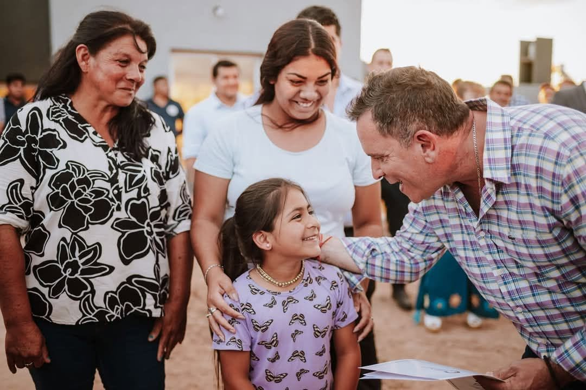
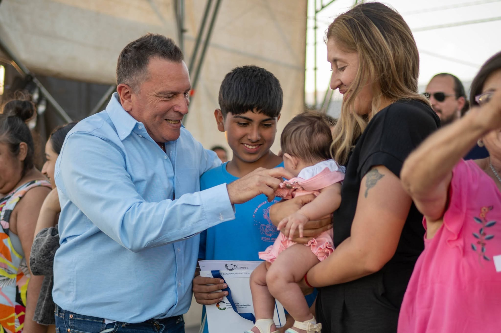
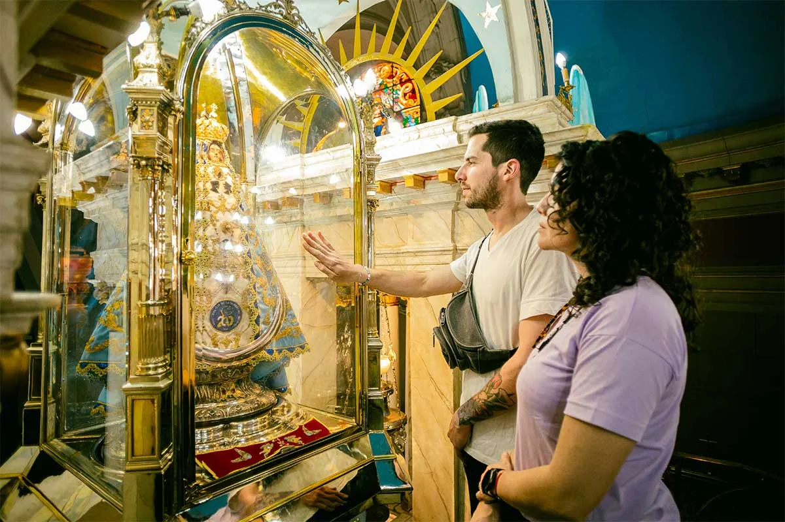
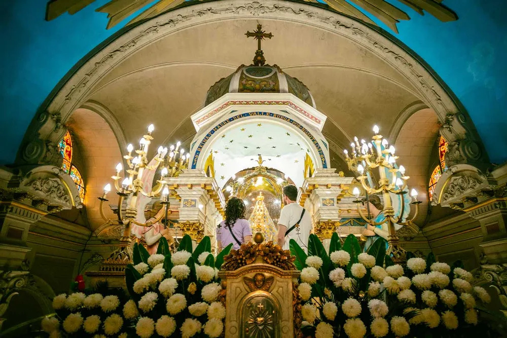
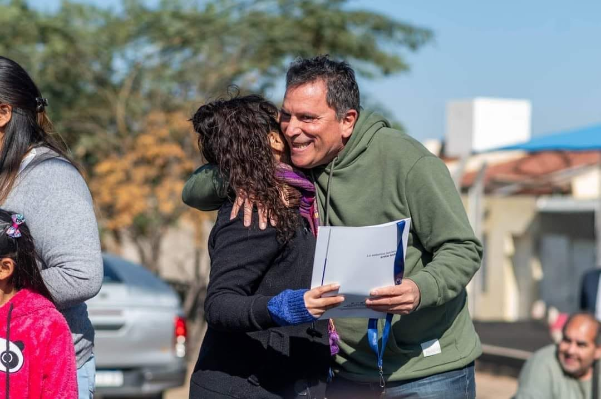
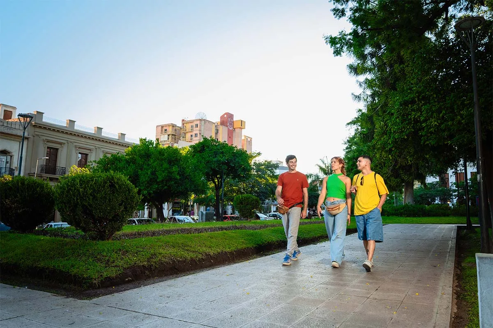

soluciones habitacionales
“Con fe en nuestra gente y esperanza en lo que viene, la Capital puede volver a levantarse barrio por barrio.”
Mensaje rector · fe, esperanza, cercanía y gestión concreta para la CapitalPerfil público

Pocho Sáenz: una esperanza concreta para la Capital.
La fuerza de Pocho está en unir sensibilidad y gestión: estar cerca de la gente, escuchar lo que duele en cada barrio y convertir esa esperanza en obras, servicios y respuestas concretas.
- Vivienda y hábitateje de gestión pública reconocible.
- Obra públicamensaje de Estado presente y desarrollo.
- Fe y esperanzauna campaña que conecta con la identidad profunda de Catamarca.
Trayectoria
La esperanza necesita gestión para hacerse realidad.
La fe mueve, la esperanza une y la gestión cumple. Esa combinación puede hablarle a una Capital que quiere creer de nuevo.

escrituras entregadas
viviendas en Capital
departamentos alcanzados
Proyecto de ciudad
Una Capital con fe, orden y futuro.
Ejes para transformar esperanza en decisiones municipales concretas, cuidando la identidad profunda de Catamarca.


Vivienda y hábitat
Acceso al suelo, mejoramiento barrial, regularización y acompañamiento a familias jóvenes.
Obra pública barrial
Prioridades por zona, mantenimiento urbano y obras concretas en la vida diaria.
Municipio digital
Trámites simples, turnos claros, seguimiento de reclamos y transparencia operativa.
Trabajo local
Proveedores catamarqueños, economía barrial y articulación con sectores productivos.
Plan Capital 100 días
Cinco compromisos para que la esperanza se note en la vida diaria.
La emoción abre la puerta, pero la confianza se gana con compromisos simples, visibles y cumplibles.
Barrios limpios y servicios al día
Relevamiento por zona, cuadrillas visibles, limpieza, iluminación y mantenimiento urbano con seguimiento público.
Calles, veredas y accesos barriales
Plan de intervención rápida para puntos críticos definidos con vecinos, centros vecinales y equipos técnicos.
Hábitat y vivienda desde el municipio
Oficina municipal de hábitat para ordenar demanda, lotes, mejoras, regularización y acompañamiento familiar.
Trámites simples y atención al vecino
Turnos, reclamos y expedientes con trazabilidad: menos vueltas, más respuesta y canales claros.
Trabajo local y economía barrial
Compras locales, proveedores catamarqueños, ferias, oficios y articulación con comercios de cada zona.
Por qué Pocho
Porque la esperanza también necesita alguien que sepa hacer.
Cercanía real
Una imagen de campaña que sale del territorio, no de un banco de fotos.
Estas piezas visuales ayudan a construir una candidatura más humana: vecinos, familias, recorridas y vínculo directo.


Territorio real
La Capital se gana escuchando barrio por barrio.
En lugar de un mapa ficticio, esta sección muestra una lectura territorial más creíble: zonas, demandas concretas y una forma clara de salir a conversar con los vecinos.
Método territorial
Escuchar, priorizar y volver con respuestas.
- Reunión barrialVecinos, centros vecinales, comerciantes y referentes.
- Problema concretoLuz, limpieza, calles, seguridad urbana, trámites o hábitat.
- Compromiso visibleFecha, responsable y seguimiento público.
Orden urbano y atención rápida
Tránsito, limpieza, veredas, comercios y trámites municipales con respuesta clara.
Obras barriales y servicios
Iluminación, calles, espacios comunitarios y presencia municipal sostenida.
Hábitat, juventud y trabajo
Mejoras habitacionales, deporte, oficios y oportunidades para familias jóvenes.
Conectividad y cercanía
Recorridas, accesos, mantenimiento urbano y escucha permanente en cada sector.
“La esperanza se organiza cuando cada barrio sabe que fue escuchado.”
Comando
La campaña se conduce con territorio, datos y presencia real.
Una campaña con fe en su pueblo necesita escuchar barrios, ordenar demandas y estar presente donde la gente espera respuestas.
Ritmo semanalSostenido
6.922base proyectada
Sumate a la campaña
Ganar la Capital empieza con encender esperanza en cada barrio.
Sumarse es cuidar la esperanza: vecinos, fiscales, voluntarios y referentes para construir una Capital más cercana.